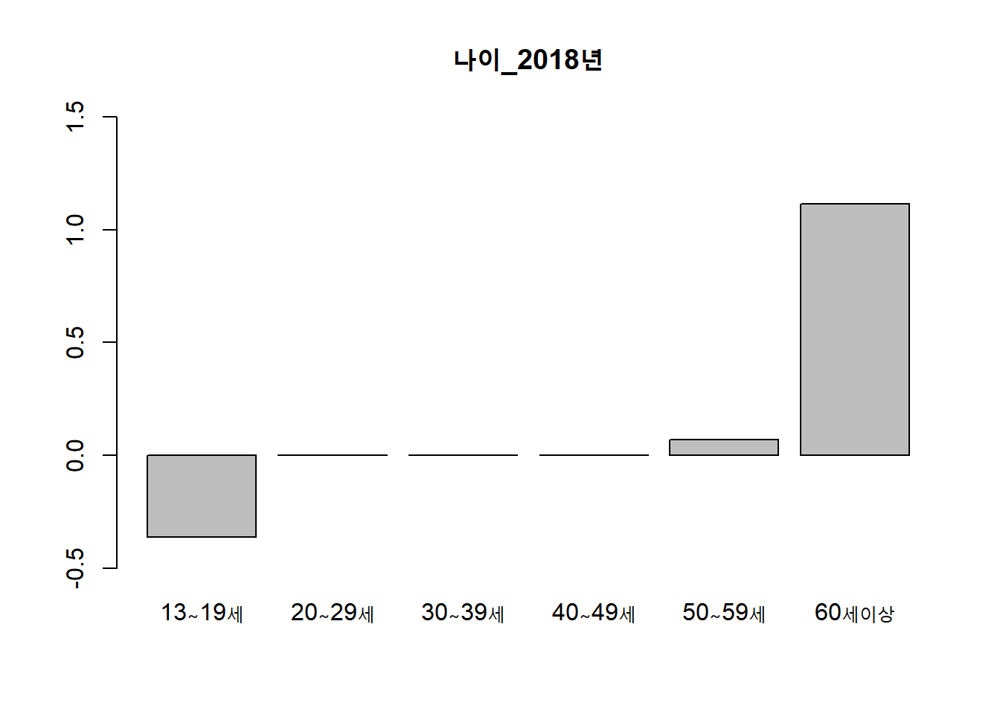

mosaicplot(~ Age+Sex+Survived, data = Titanic,color = c("brown","darkgreen"))EDA Assignment 5: Chapter 7
Exploratory Data Analysis (2021 Spring) [in Korean]
7장. 2원 자료, 빈도 표의 탐색
추가과제: titanic
1)
On your own; The survival rates differ in Children?
성인 집단에서는 여성과 남성 사이의 생존율에는 큰 차이가 보여지고 있는데에 비해, 어린아이들의 집단에서는 여성과 남성의 생존율이 큰 차이가 있지 않는 것으로 보인다. 일반적인 상황에서 선원들의 통제가 잘 이루어지지 않는 경우 여성들과 아이들의 생존율이 매우 낮아지지만, 타이타닉호 사건 때는 승객들에 대한 통제도와 선원들의 상선사관들의 명령 복종정도가 높았기 때문에 여자와 아이들 먼저 규칙에 의해 남자아이들의 생존율이 성인 남자의 생존율에 비해서 상당히 높게 나타났다.
mosaicplot(~ Class + Age + Survived, data = Titanic, color = c("brown","darkgreen"))1등석과 2등석의 아이들은 1명빼고 전부 살아남았지만, 3등실에서 구조되지 못한 어린이는 구조된 수의 거의 두 배에 가까웠다. 3등석의 아이들이 1등석과 2등석에 비해서 살아남기 힘들었던 이유는 배 안의 구조가 복잡했기 때문이다. 3등석에는 영어를 잘 하지 못하는 승객들도 많았기에 갑판과 적절한 의사소통을 하지못해 밖으로 나가는 것을 실패한 사람들이 많다는 점에서 그 이유를 찾을 수 있다.
mosaicplot(~ Sex + Class + Age + Survived, data = Titanic, color = c("brown","darkgreen"))모든 요인을 합친 그래프이다. 1등석, 2등석 모두 어린아이들이 어른에 비해, 여자들이 남자들에 비해 생존확률이 월등히 높다. 3등석의 경우에도 여자 아이들이 남자아이들에 비해서 생존 확률이 월등히 높았다는 점에서 “여자와 아이”먼저 원칙이 지켜지고 있음이 확인되고 있다. 함장 로버트 샐먼드(Robert Salmond) 해군 대령 이하 육해군 장병들은 갑판에 부동 자세로 도열한 채로 질서를 유지하였기 대문에 규칙이 지켜질 수 있었고, 승객들은 명령에 복종할 수 밖에 없었던 것으로 보인다.
1번
아래 자료를 분석하여라. The data are part of a larger experiments to determine the effectiveness of blast furnace slags (고로 슬랙) as agricultural liming materials (중화작업) on three types of soil, sandy loams(I), sandy clay loam(II), and loamy sand(III). The treatments were all applied at 4000 lbs per acre, and what was measured was the corn yield in bushels per acre.
treatment=c(11.1,32.6,63.3,15.3,40.8,65.0,22.7,52.1,58.8,23.8,52.8,61.4,25.6,63.1,41.1,31.2,59.5,78.1,25.8,55.3,60.2)
m=mean(treatment)
m[1] 44.74286treatment=as.data.frame(matrix(treatment,byrow=T,ncol=3))
names(treatment)=c("sandy loams(I)", "sandy clay loam(II)", "loamy sand(III)")
rownames(treatment)=c("None","Coarse slag","Mediaum slag","Agricultural slag","Agricultural limestone","Agricultural slag + minor limestone","Agricultural limestone + minor elements")
treatment sandy loams(I) sandy clay loam(II)
None 11.1 32.6
Coarse slag 15.3 40.8
Mediaum slag 22.7 52.1
Agricultural slag 23.8 52.8
Agricultural limestone 25.6 63.1
Agricultural slag + minor limestone 31.2 59.5
Agricultural limestone + minor elements 25.8 55.3
loamy sand(III)
None 63.3
Coarse slag 65.0
Mediaum slag 58.8
Agricultural slag 61.4
Agricultural limestone 41.1
Agricultural slag + minor limestone 78.1
Agricultural limestone + minor elements 60.2행은 blast furnace slags의 유형 / 열은 토양의 종류를 의미한다. 고로 슬랙과 토양이 농업 중화 작업에 영향을 미치고 있는데 각각이 영향을 미치는 정도에 대해서 분석을 진행해보고자 한다.
고로 슬랙을 i, 토양을 j로 표기하고 i와 j에 따른 중화작업의 효과를 y_ij로 나타내고자 한다. y_ij에 대한 Additivity Model y_ij=μ (all) + α_i (row_effect) + β_j (column_effect) + e_ij (residual), e~(0,sigma), i=(1,…,7),j=(1,…,3)을 고려한다. (All, Common, Constant )
treatment=c(11.1,32.6,63.3,15.3,40.8,65.0,22.7,52.1,58.8,23.8,52.8,61.4,25.6,63.1,41.1,31.2,59.5,78.1,25.8,55.3,60.2)
m=mean(treatment)
m[1] 44.74286treatment=as.data.frame(matrix(treatment,byrow=T,ncol=3))
names(treatment)=c("sandy loams(I)", "sandy clay loam(II)", "loamy sand(III)")
rownames(treatment)=c("None","Coarse slag","Mediaum slag","Agricultural slag","Agricultural limestone","Agricultural slag + minor limestone","Agricultural limestone + minor elements")
treatment sandy loams(I) sandy clay loam(II)
None 11.1 32.6
Coarse slag 15.3 40.8
Mediaum slag 22.7 52.1
Agricultural slag 23.8 52.8
Agricultural limestone 25.6 63.1
Agricultural slag + minor limestone 31.2 59.5
Agricultural limestone + minor elements 25.8 55.3
loamy sand(III)
None 63.3
Coarse slag 65.0
Mediaum slag 58.8
Agricultural slag 61.4
Agricultural limestone 41.1
Agricultural slag + minor limestone 78.1
Agricultural limestone + minor elements 60.2treatment_polished=medpolish(treatment)1: 109.3
2: 84.6
Final: 84.6treatment_polished
Median Polish Results (Dataset: "treatment")
Overall: 52.8
Row Effects:
None Coarse slag
-13.4 -9.2
Mediaum slag Agricultural slag
-1.8 0.0
Agricultural limestone Agricultural slag + minor limestone
1.1 6.7
Agricultural limestone + minor elements
1.3
Column Effects:
sandy loams(I) sandy clay loam(II) loamy sand(III)
-28.3 0.0 8.6
Residuals:
sandy loams(I) sandy clay loam(II)
None 0.0 -6.8
Coarse slag 0.0 -2.8
Mediaum slag 0.0 1.1
Agricultural slag -0.7 0.0
Agricultural limestone 0.0 9.2
Agricultural slag + minor limestone 0.0 0.0
Agricultural limestone + minor elements 0.0 1.2
loamy sand(III)
None 15.3
Coarse slag 12.8
Mediaum slag -0.8
Agricultural slag 0.0
Agricultural limestone -21.4
Agricultural slag + minor limestone 10.0
Agricultural limestone + minor elements -2.5# medpolish()를 이용하여 중간값 다듬기를 진행하였는데 maxiter=1일 때는 수렴하지 않았다는 경고 메시지를 확인할 수 있었고 maxiter를 설정하지 않고 분석한 결과 maxiter=2에서 결과 값이 나오는 것을 확인하였다.
plot(treatment_polished)
# 0의 값들이 상당히 많은 것이 확인되고 있다. 0 라인 밖에 있는 점들은 딱 6개만 확인되고 있기 때문에 따로 선을 그리기가 어렵다.
plot(treatment_polished)
abline(0,-10) # 적절하지 않다.
abline(0,10) # 적절하지 않다.
abline(lm(as.vector(treatment_polished$residuals) ~
as.vector(outer(treatment_polished$row,treatment_polished$col, "*")/treatment_polished$overall)),col="orange")lm(as.vector(treatment_polished$residuals) ~
as.vector(outer(treatment_polished$row,treatment_polished$col, "*")/treatment_polished$overall))[1]$coefficients
(Intercept)
0.8341529
as.vector(outer(treatment_polished$row, treatment_polished$col, "*")/treatment_polished$overall)
-0.5110273 # 기울기 -0.5110이므로 1과는 다르다. (log 변환의 필요성이 떨어진다.)
# 직선을 그리기가 어렵다. (경향성이 따로 보이지는 않아보인다.)
# Plot에서 어떠한 의미있는 패턴이 나타나지 않기 때문에 변환이 요구되지 않는 것으로 보인다.
boxplot(treatment_polished$residuals)# Residual 값을 가지고 boxplot을 그려보았는데 sandy loams에는 outlier 1개, sandy clay loam에는 outlier 2개, loamy sand에는 outlier 1개이다.
# 행 효과 크기 순으로 재정렬한 잔차표
round(treatment_polished$residuals[order(treatment_polished$row),],1) sandy loams(I) sandy clay loam(II)
None 0.0 -6.8
Coarse slag 0.0 -2.8
Mediaum slag 0.0 1.1
Agricultural slag -0.7 0.0
Agricultural limestone 0.0 9.2
Agricultural limestone + minor elements 0.0 1.2
Agricultural slag + minor limestone 0.0 0.0
loamy sand(III)
None 15.3
Coarse slag 12.8
Mediaum slag -0.8
Agricultural slag 0.0
Agricultural limestone -21.4
Agricultural limestone + minor elements -2.5
Agricultural slag + minor limestone 10.0# Check Decomposition
decomposed=(treatment_polished$overall + outer(treatment_polished$row,treatment_polished$col, "+") + treatment_polished$residuals)
all(round(decomposed,1)==treatment)[1] TRUE# 가법성 모형이 확인되어지고 있다.
# Comparison Values
round(outer(treatment_polished$row,treatment_polished$col, "*")/treatment_polished$overall,2) sandy loams(I) sandy clay loam(II)
None 7.18 0
Coarse slag 4.93 0
Mediaum slag 0.96 0
Agricultural slag 0.00 0
Agricultural limestone -0.59 0
Agricultural slag + minor limestone -3.59 0
Agricultural limestone + minor elements -0.70 0
loamy sand(III)
None -2.18
Coarse slag -1.50
Mediaum slag -0.29
Agricultural slag 0.00
Agricultural limestone 0.18
Agricultural slag + minor limestone 1.09
Agricultural limestone + minor elements 0.21# Comparison value 기준으로 0값이 총 9개 확인됨. 그런데 더 많은 값들이 Additivity Plot의 x축과 y축 근처에 존재하는 것으로 보아 몇몇 피팅에서 벗어난 값을 제외하면 대부분 0근처에서 존재하고 있는 것이 확인된다.
# 필요 없지만 그려서 확인하기
# Log 변환 모형과 비교해보기
treatment_polished2=medpolish(log(treatment))1: 2.631752
2: 2.157306
Final: 2.157306treatment_polished2
Median Polish Results (Dataset: "log(treatment)")
Overall: 3.966511
Row Effects:
None Coarse slag
-0.48219890 -0.25782911
Mediaum slag Agricultural slag
-0.04326798 0.00000000
Agricultural limestone Agricultural slag + minor limestone
0.07290677 0.24058022
Agricultural limestone + minor elements
0.04626172
Column Effects:
sandy loams(I) sandy clay loam(II) loamy sand(III)
-0.7968256 0.0000000 0.1508986
Residuals:
sandy loams(I) sandy clay loam(II)
None -0.2805416 0.000000
Coarse slag -0.1840036 0.000000
Mediaum slag -0.0040527 0.029922
Agricultural slag 0.0000000 0.000000
Agricultural limestone 0.0000000 0.105303
Agricultural slag + minor limestone 0.0301523 -0.121115
Agricultural limestone + minor elements 0.0344272 0.000000
loamy sand(III)
None 0.512674
Coarse slag 0.314807
Mediaum slag 0.000000
Agricultural slag 0.000000
Agricultural limestone -0.474308
Agricultural slag + minor limestone 0.000000
Agricultural limestone + minor elements -0.065999plot(treatment_polished2)outer(treatment_polished2$row,treatment_polished2$col, "*")/treatment_polished2$overall sandy loams(I) sandy clay loam(II)
None 0.096868108 0
Coarse slag 0.051794846 0
Mediaum slag 0.008692030 0
Agricultural slag 0.000000000 0
Agricultural limestone -0.014646116 0
Agricultural slag + minor limestone -0.048329747 0
Agricultural limestone + minor elements -0.009293437 0
loamy sand(III)
None -0.018344373
Coarse slag -0.009808636
Mediaum slag -0.001646051
Agricultural slag 0.000000000
Agricultural limestone 0.002773604
Agricultural slag + minor limestone 0.009152433
Agricultural limestone + minor elements 0.001759942# Log 변환 이전과 이후의 Residual 값들을 비교하였을 때 한개 값을 제외하면 변환이전의 값들이 더 0 근처에 모여있다는 점에서 변환 이전의 데이터를 사용하고자 한다.
stem(treatment_polished$residuals);stem(treatment_polished2$residuals)
The decimal point is 1 digit(s) to the right of the |
-2 | 1
-1 |
-0 | 73311
0 | 000000000119
1 | 035
The decimal point is 1 digit(s) to the left of the |
-4 | 7
-2 | 8
-0 | 8270
0 | 0000000003331
2 | 1
4 | 1Raw Data를 활용하여 Column Effect(토양)와 Row Effect(고로 슬랙)를 시각화해보고자 한다.
# Row Effect
barplot(treatment_polished$row, ylim=c(-15,15), main="Agriculutre Slag의 효과")treatment_polished$row None Coarse slag
-13.4 -9.2
Mediaum slag Agricultural slag
-1.8 0.0
Agricultural limestone Agricultural slag + minor limestone
1.1 6.7
Agricultural limestone + minor elements
1.3 # Column Effect
barplot(treatment_polished$col, ylim=c(-30,10) , main="Soil의 효과")treatment_polished$col sandy loams(I) sandy clay loam(II) loamy sand(III)
-28.3 0.0 8.6 먼저, Row Effect에 대해서 분석해보고자 한다. 6가지의 처치 중 Agricultural slag + minor limestone이 6.7으로 가장 효과적인 것으로 보이며, Coarce Slag이 덜 효과적인 것이 확인된다. 나머지 처리들도 전부 토양 중성화에 어느정도 효과적인 것으로 보인다. y축의 단위가 무엇인지 정확히 알 수 없기에 단순히 중화수준이 높게 나온다고 좋다고 말할 수는 없지만 (왜냐하면 토양 산도는 너무 높아져도 너무 낮아져도 안되고 적정수준을 유지해야하기 때문이다.) 중화작업엔 Agricultural slag + minor limestone이 효과적인 것으로 보인다. 다음은 Column Effect에 대해서 분석해보고자 한다. 3가지 토양 종류 중 loamy sand에서 중화 효과가 가장 좋고,sandy loams의 중화효과는 나쁘게 나타난다. 위에서 언급하였듯이 결과변수의 단위가 정확히 무엇인지 언급되어있지 않기 때문에 단순히 loamy sand가 sandy loams에 비해서 더 좋다고 이야기 하기 힘들다. 하지만 토양 중성화가 강하게 요구되는 작물의 경우 loamy sand에서 키우는 것이 가장 효과적일 것으로 보인다. 토양효과가 가장 적은 sangy clay loam에서 각 treatment들의 효과를 비교하면 더 잘 드러나게 될 것으로 보인다.
각 Soil을 묶어서 보았을 때에는 Agricultural slag + minor limestone이 중화효과가 가장 높게 나타났지만, Sandy loams에서는 Agricultural slag + minor limestone을 사용하더라도 중화효과가 거의 나타나지 않을 수도 있다. 또한 loamy sand의 중화효과가 가장 높게 나타났음에도 불구하고 Agricultural limestone을 사용할 경우에 중화효과에 부정적인 영향을 줄 수 있다는 것을 확인하는 것이 필요하다. 따라서, 자신의 작물을 키우는 Soil에 적합한 slag을 선택하는 것이 최적의 중화효과를 달성하는데 있어서 가장 적절할 것으로 보인다.
우선, 자신의 농장이 Sandy Loams일 경우 Agricultural Slag을 사용해서는 안되고, Slag을 사용하였을 때 사용하지 않았을 때에 비해 중화효과는 큰 차이가 없을 것이다. 자신의 농장이 Sandy Clay Loams일 경우 Agricultural limestone이 가장 효과적이다. 자신의 농장이 Loamy sand일 경우 Agricultural limestone은 중화에 부정적인 영향을 미칠 뿐만 아니라 아무런 처치를 하지 않았을 때 중화효과가 가장 높게 나타난다. 따라서, Slag의 Treatment는 자신의 농장이 sandy clay loams토양으로 이루어져 있을 때에만 agricultural limestone 위주로 사용하는 것이 좋고 나머지 토양에서는 treatment가 효과가 없거나 부정적인 효과를 보일 수 있으므로 사용하지 않는 것이 바람직 할 것으로 보인다.
2번
교과서 7.4절 버클리 대학교 대학원 지원자 자료의 분석 내용을 그대로 따라 실행하고 분석하여라. (본인이 책을 읽고 이해한 후 책을 덮고 이해한 분석 내용을 본인의 문자으로 적어 내면 됨. 거의 똑같아도 됨.) 인터넷에서 심프슨의 역설에 대한 예를 세 개 찾아보아라.
data(UCBAdmissions) # 3차원 배열
adm=UCBAdmissions
adm, , Dept = A
Gender
Admit Male Female
Admitted 512 89
Rejected 313 19
, , Dept = B
Gender
Admit Male Female
Admitted 353 17
Rejected 207 8
, , Dept = C
Gender
Admit Male Female
Admitted 120 202
Rejected 205 391
, , Dept = D
Gender
Admit Male Female
Admitted 138 131
Rejected 279 244
, , Dept = E
Gender
Admit Male Female
Admitted 53 94
Rejected 138 299
, , Dept = F
Gender
Admit Male Female
Admitted 22 24
Rejected 351 317#결측치 확인
is.na(adm) # 없음, , Dept = A
Gender
Admit Male Female
Admitted FALSE FALSE
Rejected FALSE FALSE
, , Dept = B
Gender
Admit Male Female
Admitted FALSE FALSE
Rejected FALSE FALSE
, , Dept = C
Gender
Admit Male Female
Admitted FALSE FALSE
Rejected FALSE FALSE
, , Dept = D
Gender
Admit Male Female
Admitted FALSE FALSE
Rejected FALSE FALSE
, , Dept = E
Gender
Admit Male Female
Admitted FALSE FALSE
Rejected FALSE FALSE
, , Dept = F
Gender
Admit Male Female
Admitted FALSE FALSE
Rejected FALSE FALSE(Tab1<-adm[1,,]) # Admitted Dept
Gender A B C D E F
Male 512 353 120 138 53 22
Female 89 17 202 131 94 24(Tab2<-adm[2,,]) # Rejected Dept
Gender A B C D E F
Male 313 207 205 279 138 351
Female 19 8 391 244 299 317(Tab=Tab1+Tab2) Dept
Gender A B C D E F
Male 825 560 325 417 191 373
Female 108 25 593 375 393 341Tab3=addmargins(Tab)
# List 다루기 힘들어서 변환
Tab=matrix(Tab,byrow=F,ncol=6)
colnames(Tab)=c(LETTERS[1:6])
rownames(Tab)=c("Male","Female")
Tab A B C D E F
Male 825 560 325 417 191 373
Female 108 25 593 375 393 341# 학과별 남여 지원 비율 비교
pTab=prop.table(Tab,2)
pTab A B C D E F
Male 0.8842444 0.95726496 0.3540305 0.5265152 0.3270548 0.522409
Female 0.1157556 0.04273504 0.6459695 0.4734848 0.6729452 0.477591barplot(Tab,legend=rownames(Tab),ylab="count",main="All Applicants w/ exact per dpt",col=c("skyblue","hotpink"))barplot(pTab*100,legend=rownames(Tab),ylab="%",main="All Applicants w/ proportional per dpt",col=c("skyblue","hotpink")) 
library(ghibli)
ghibli_palettes$MarnieLight1<colors>
#95918EFF #AF9699FF #80C7C9FF #8EBBD2FF #E3D1C3FF #B3DDEBFF #F3E8CCFF # 성별 학과 지원 비율 비교
pTab2=prop.table(Tab,1)
pTab2 A B C D E F
Male 0.30657748 0.20810108 0.1207729 0.1549610 0.07097733 0.1386102
Female 0.05885559 0.01362398 0.3231608 0.2043597 0.21416894 0.1858311barplot(t(Tab),beside=T,legend=colnames(Tab),ylab="count",main="All Applicants w/ exact per sex",col=ghibli_palettes$MarnieLight1[2:7])
barplot(t(pTab2)*100,beside=T,legend=colnames(Tab),ylab="%",main="All Applicants w/ proportional per sex",col=ghibli_palettes$MarnieLight1[2:7],ylim=c(0,35)) # 남성들의 경우 A과나 B과에 50% 이상 배정되어 있는 것에 비해 여성들의 경우 대부분(90%) C,D,E,F과에 재학중인 것이 확인된다.
# 성별 합격률 비교
Tab.M<-adm[,1,]
Tab.M Dept
Admit A B C D E F
Admitted 512 353 120 138 53 22
Rejected 313 207 205 279 138 351Tab.F<-adm[,2,]
Tab.F Dept
Admit A B C D E F
Admitted 89 17 202 131 94 24
Rejected 19 8 391 244 299 317(Tab.M=matrix(Tab.M,byrow=F,ncol=6)) [,1] [,2] [,3] [,4] [,5] [,6]
[1,] 512 353 120 138 53 22
[2,] 313 207 205 279 138 351colnames(Tab.M)=c(LETTERS[1:6])
rownames(Tab.M)=c("Admitted","Rejected")
Tab.M A B C D E F
Admitted 512 353 120 138 53 22
Rejected 313 207 205 279 138 351p.Tab.M=prop.table(Tab.M,2)
barplot(p.Tab.M*100,legend=rownames(Tab.M),ylab="%",main="Male Admission",col=c("skyblue","hotpink"))Tab.M=cbind(Tab.M,apply(Tab.M,1,sum))
Tab.M=rbind(Tab.M,apply(Tab.M,2,sum))
Tab.M[1,7]/Tab.M[3,7] #전체합격률[1] 0.4451877Tab.M=rbind(Tab.M,round((Tab.M[1,]/Tab.M[3,])*100,2)) # 마지막줄 과별 합격률 %
Tab.M A B C D E F
Admitted 512.00 353.00 120.00 138.00 53.00 22.0 1198.00
Rejected 313.00 207.00 205.00 279.00 138.00 351.0 1493.00
825.00 560.00 325.00 417.00 191.00 373.0 2691.00
62.06 63.04 36.92 33.09 27.75 5.9 44.52(Tab.F=matrix(Tab.F,byrow=F,ncol=6)) [,1] [,2] [,3] [,4] [,5] [,6]
[1,] 89 17 202 131 94 24
[2,] 19 8 391 244 299 317colnames(Tab.F)=c(LETTERS[1:6])
rownames(Tab.F)=c("Admitted","Rejected")
Tab.F A B C D E F
Admitted 89 17 202 131 94 24
Rejected 19 8 391 244 299 317p.Tab.F=prop.table(Tab.F,2)
barplot(p.Tab.F*100,legend=rownames(Tab.F),ylab="%",main="Female Admission",col=c("skyblue","hotpink"))Tab.F=cbind(Tab.F,apply(Tab.F,1,sum))
Tab.F=rbind(Tab.F,apply(Tab.F,2,sum))
Tab.F[1,7]/Tab.F[3,7] #전체합격률[1] 0.3035422Tab.F=rbind(Tab.F,round((Tab.F[1,]/Tab.F[3,])*100,2)) # 마지막줄 과별 합격률 %
Tab.F A B C D E F
Admitted 89.00 17 202.00 131.00 94.00 24.00 557.00
Rejected 19.00 8 391.00 244.00 299.00 317.00 1278.00
108.00 25 593.00 375.00 393.00 341.00 1835.00
82.41 68 34.06 34.93 23.92 7.04 30.35#전체 합격률에서는 남자가 높은 것이 확인되어지지만, 학과별로 보았을 때에는 여자의 합격률이 다소 높은 것이 확인되어 진다.
#심프슨의 역설
# 각 부분에 대한 평균이 크다고 해서 전체에 대한 평균까지 크지는 않다는 의미이다. 영국의 통계학자 에드워드 심슨이 정리한 역설로(심프슨의 역설이라고도 한다) 각각의 변수에 신경 쓰지 않고 전체 통계 결과를 유추하다 일어나는 오류이다.
# 계량경제학에서 자주 사용되는 개념인 내생성!
# 모자이크 플롯
mosaicplot(~Dept+Gender,data=adm,color=ghibli_palettes$MononokeLight[2:3], main="Dept, Gender")
mosaicplot(~Gender+Dept,data=adm,color=ghibli_palettes$MononokeLight[2:3], main="Gender, Dept")# 성비가 학과별로 유의미하게 다른 것이 확인되어 진다.
# 모자이크 플롯
mosaicplot(~Dept+Admit,data=adm[,1,],color=ghibli_palettes$MononokeLight[2:3], main="Male, Admit~Dept")mosaicplot(~Dept+Admit,data=adm[,2,],color=ghibli_palettes$MononokeLight[2:3], main="Female, Admit~Dept")# 학과별로 합격률이 매우 다르다. A에서 F로 갈 수록 합격률이 급격하게 감소하고 있는 것이 확인되어진다.
# 모자이크 플롯
mosaicplot(~Dept+Admit+Gender,data=adm,color=ghibli_palettes$MononokeLight[1:2], main="Admit, Dept, Gender")# 학과 내에서는 성별로 합격률 차이가 거의 나지 않는다.
mosaicplot(~Admit+Gender,data=adm,color=ghibli_palettes$MononokeLight[1:2], main="Admit,Gender")# 그럼에도 불구하고 합격여부에 관해서 성 차이가 있는 것처럼 착시현상을 보인다.
# 이러한 착시현상이 발생하는 이유는 여성들의 이공계 기피에 의해 발생한다. (각 학과별로는 그렇지 않은데 전체로는 합격률이 낮은 것 처럼 보임)심프슨 역설의 예시
미국 중위소득의 감소 https://economix.blogs.nytimes.com/2013/05/01/can-every-group-be-worse-than-average-yes/ 2000년 이래로 미국의 중위소득은 인플레이션을 고려하더라도 1%만큼 증가한 것이 확인된다. 그러나, 고등학교 중퇴자 집단, 고등학교 졸업자 집단, 전문대학 졸업자 집단 그리고 4년제 대학 졸업자 및 대학원 졸업자 집단의 소득은 모두 감소하였다. (모든 교육 하위집단에서 중위소득은 2000년도보다 낮은 수준으로 확인되어진다.) 그러한 요인이 발생한 이유는 교육수준에 따른 하위집단에 속하는 인구 비율이 달라졌기 때문이다. (2000년 이래로 13년동안 대학교 졸업자수는 더 낮은 교육을 받은 사람들에 비해서 더 많이 증가했지만, 그들의 임금은 종합적으로 보았을 때 1.2%정도 훨씬 더 천천히 감소하였기 때문이다. ) 전체적인 관점에서는 임금이 증가하였다는 결론을 낼 수 있지만, 개인의 관점에서는 임금이 오히려 감소하였다고 보는 것이 가능하다.
벨기에의 COVID-19 사망률 (성별, 나이)
https://link.springer.com/article/10.1007/s11192-020-03830-w https://www.medrxiv.org/content/10.1101/2020.06.20.20136234v2
belgium=matrix(c(0,0,0.02,0.01,0.29,0.14,2.92,1.61,5.56,3.35,13.20,11.07,1.18,1.31),byrow=T,ncol=2)
bel=array(belgium,c(7,2),dimnames=list(age=c("0~24","25~44","45~64","65~74","75~84","85 and older","All Ages"),gender=c("Male","Female")))
bel gender
age Male Female
0~24 0.00 0.00
25~44 0.02 0.01
45~64 0.29 0.14
65~74 2.92 1.61
75~84 5.56 3.35
85 and older 13.20 11.07
All Ages 1.18 1.31R.R.’s local Flemish newspaper, De Standaard에서 2020년 6월 기사 인용. 모든 나이 Group들에서 남성의 COVID-19 감염 후 사망률이 높게 측정되고 있음에도 불구하고 전체 인구를 고려하였을 때 여성의 COVID-19 감염 후 사망률이 오히려 높게 나타나는 결과로 이어짐. 이러한 결과가 나타나는 인구는 벨기에에서는 남자노인들보다 여자 노인들이 훨신 더 많기 때문임으로 보인다.
- Titanic Dataset
# Titanic
tdf <- as.data.frame(Titanic)
Tita <- tdf[rep(1:nrow(tdf), tdf$Freq), -5]
library(reshape2)
A=dcast(Tita,Class~Survived)Using Survived as value column: use value.var to override.Aggregation function missing: defaulting to lengthA$"prop(%)"=round(A$Yes/(A$No+A$Yes),4)*100
A Class No Yes prop(%)
1 1st 122 203 62.46
2 2nd 167 118 41.40
3 3rd 528 178 25.21
4 Crew 673 212 23.95B=dcast(Tita,Class~Survived+Sex)Using Survived as value column: use value.var to override.
Aggregation function missing: defaulting to lengthB$"Maleprop(%)"=round(B$Yes_Male/(B$Yes_Male+B$No_Male),4)*100
B$"Femaleprop(%)"=round(B$Yes_Female/(B$Yes_Female+B$No_Female),4)*100
Final=B[,c(4,2,6,5,3,7)]
rownames(Final)=A$Class
A;Final Class No Yes prop(%)
1 1st 122 203 62.46
2 2nd 167 118 41.40
3 3rd 528 178 25.21
4 Crew 673 212 23.95 Yes_Male No_Male Maleprop(%) Yes_Female No_Female Femaleprop(%)
1st 62 118 34.44 141 4 97.24
2nd 25 154 13.97 93 13 87.74
3rd 88 422 17.25 90 106 45.92
Crew 192 670 22.27 20 3 86.96# 3등석과 선원들 비교 비교
mosaicplot(~Class+Survived,Titanic,color=T,main="Class~Survived")mosaicplot(~Class+Survived+Sex,Titanic,color=T,main="Class~Survived Under Sex")3등석과 선원들의 생존률을 비교해보자. 남성과 여성 모두 선원들이 3등석 승객들에 비해 생존확률이 높았음에도 불구하고 (남성 승객 17.25% < 선원 22.27% , 여성 승객 45.92% < 선원 86.96%) 성별에 상관없이 모든 데이터를 비교하였을 때 3등석 승객들의 생존확률이 선원들의 생존확률보다 높은 것으로 나타난다. (승객 25.21% > 선원 23.95%) 이것의 요인으로는 내생변수 (숨겨진 변수)가 그러한 결과가 나타나는데 영향을 미쳤음을 확인할 수 있다. 3등석의 여성의 비율이 선원의 여성의 비율에 비해서 훨씬 높다는 것을 확인할 수 있다. 3등석 승객들과 선원들의 성비의 차이가 이러한 결과로 이어지게 되었음을 확인할 수 있다.
3번
[노부모 부양에 대한 태도 자료] 1988년 자료 (유인물 첨부 파일) 와 KOSIS 싸이트의 최근 자료를 비교하여 분석하라. KOSIS에서 여러 주제별 통계가 있는 데, 있을 만한 곳을 계속 찾아 들어간다. 나이별 부양책임 주체에 대한 부분만 분석한다.
- Median Polish와 barplot 병행
- two-way plot 과 Coded plot 등 손으로 그려야 하는 부분은 오려 붙여 제출한다. 제출하고, YSCEC에 올리는 파일에는 이 부분이 빠져 있어도 된다.
(1) 1988년 과 최근 자료를 각각 분석한다.
(2) 1988년 자료와 KOSIS 최근 자료의 범주가 약간 다른 점에 주의하면서 이들의 시간차(약 30여년)에 따른 태도의 변화를 서로 비교하여 분석한다.
pop1988=matrix(c(16.4,14.5,0.8,44.4,17.4,6.5,16.8,16.3,0.4,43.5,17.1,5.9,19.5,17.6,0.4,38.9,18.5,5.1,29.0,18.8,0.5,31.1,16.4,4.2,36.6,21.2,0.3,25.6,12.6,3.7,48.1,20.2,0.4,19.8,8.1,3.4),byrow=T,ncol=6)
pop1988=as.data.frame(pop1988)
colnames(pop1988)=c("장남","아들모두","딸","아들딸모두","자립","사회및기타")
rownames(pop1988)=c("15~19세","20~29세","30~39세","40~49세","50~59세","60세이상")
pop1988 장남 아들모두 딸 아들딸모두 자립 사회및기타
15~19세 16.4 14.5 0.8 44.4 17.4 6.5
20~29세 16.8 16.3 0.4 43.5 17.1 5.9
30~39세 19.5 17.6 0.4 38.9 18.5 5.1
40~49세 29.0 18.8 0.5 31.1 16.4 4.2
50~59세 36.6 21.2 0.3 25.6 12.6 3.7
60세이상 48.1 20.2 0.4 19.8 8.1 3.4pop2018=data.frame(
stringsAsFactors = FALSE,
연령 = c("13∼19세","20∼29세","30∼39세",
"40∼49세","50∼59세","60세이상"),
자립 = c(17.5, 19.2, 17.3, 16.9, 17.8, 25),
장남 = c(0.6, 0.6, 0.8, 1.1, 1.3, 2.9),
아들모두 = c(1.2, 0.7, 0.9, 0.8, 0.8, 1.6),
딸 = c(0.4, 0.3, 0.2, 0.2, 0.2, 0.4),
모든_자녀 = c(26.4, 21, 19.1, 18, 17.6, 17.4),
능력 = c(3.9, 4.7, 4.6, 4.4, 4.7, 6),
가족정부사회 = c(45.8, 49.5, 52.4, 53.1, 51.7, 38.8),
정부사회 = c(4.2, 4, 4.7, 5.5, 5.9, 7.9)
)
rownames(pop2018)=pop2018$연령
pop2018=pop2018[,c(2:9)]
pop2020=data.frame(
stringsAsFactors = FALSE,
연령 = c("15∼19세",
"20∼29세","30∼39세","40∼49세","50∼59세","60세이상",
"65세이상"),
부모_스스로 = c(11.1, 11.6, 14.4, 11, 10.7, 16, 17),
가족 = c(27.2, 21.8, 19.4, 19.4, 19.2, 26, 27.3),
가족정부사회가_함께 = c(58.9, 64.4, 63.7, 66.5, 66.5, 52.8, 49.9),
정부_사회 = c(2.7, 2.2, 2.5, 3.1, 3.6, 5.2, 5.8),
기타 = c(0.1, 0, 0, 0, 0, 0, 0)
)
rownames(pop2020)=c(pop2020$연령)
pop2020=pop2020[,c(2:6)]
pop1988; pop2018; pop2020 #2010년도 데이터부터 65세 이상 데이터가 추가됨 장남 아들모두 딸 아들딸모두 자립 사회및기타
15~19세 16.4 14.5 0.8 44.4 17.4 6.5
20~29세 16.8 16.3 0.4 43.5 17.1 5.9
30~39세 19.5 17.6 0.4 38.9 18.5 5.1
40~49세 29.0 18.8 0.5 31.1 16.4 4.2
50~59세 36.6 21.2 0.3 25.6 12.6 3.7
60세이상 48.1 20.2 0.4 19.8 8.1 3.4 자립 장남 아들모두 딸 모든_자녀 능력 가족정부사회 정부사회
13∼19세 17.5 0.6 1.2 0.4 26.4 3.9 45.8 4.2
20∼29세 19.2 0.6 0.7 0.3 21.0 4.7 49.5 4.0
30∼39세 17.3 0.8 0.9 0.2 19.1 4.6 52.4 4.7
40∼49세 16.9 1.1 0.8 0.2 18.0 4.4 53.1 5.5
50∼59세 17.8 1.3 0.8 0.2 17.6 4.7 51.7 5.9
60세이상 25.0 2.9 1.6 0.4 17.4 6.0 38.8 7.9 부모_스스로 가족 가족정부사회가_함께 정부_사회 기타
15∼19세 11.1 27.2 58.9 2.7 0.1
20∼29세 11.6 21.8 64.4 2.2 0.0
30∼39세 14.4 19.4 63.7 2.5 0.0
40∼49세 11.0 19.4 66.5 3.1 0.0
50∼59세 10.7 19.2 66.5 3.6 0.0
60세이상 16.0 26.0 52.8 5.2 0.0
65세이상 17.0 27.3 49.9 5.8 0.0# 2020년도의 경우 가족 형태가 바뀌면서 노인 부양을 담당하는 주체가 변경되어 column name들이 변경되어진 것으로 보인다.총 세개 시점의 데이터가 존재한다. 만약 그 데이터들이 가법적 모형을 따를경우 다음과 같은 모형으로 표현할 수 있을 것이다. y_ijk=μk+α_ik+β_jk+e_ijk ,e_ijk~(0,σ),i=(1,…,6) (row effect),j=(1,…,5 or 6 or 8)(column effect), k=(1,2,3) (Time)을 고려한다. 1988데이터는 row * col = 66 2010데이터는 row col = 68 2020데이터는 row col = 6*5 개의 효과를 가짐
pop1988_polished=medpolish(pop1988)1: 155.4
2: 144.8
Final: 144.8pop1988_polished
Median Polish Results (Dataset: "pop1988")
Overall: 17.45
Row Effects:
15~19세 20~29세 30~39세 40~49세 50~59세 60세이상
0.525 0.175 0.125 -0.125 -0.625 -0.725
Column Effects:
장남 아들모두 딸 아들딸모두 자립 사회및기타
6.80 0.75 -17.00 17.55 -0.75 -12.80
Residuals:
장남 아들모두 딸 아들딸모두 자립 사회및기타
15~19세 -8.375 -4.225 -0.175 8.875 0.175 1.325
20~29세 -7.625 -2.075 -0.225 8.325 0.225 1.075
30~39세 -4.875 -0.725 -0.175 3.775 1.675 0.325
40~49세 4.875 0.725 0.175 -3.775 -0.175 -0.325
50~59세 12.975 3.625 0.475 -8.775 -3.475 -0.325
60세이상 24.575 2.725 0.675 -14.475 -7.875 -0.525pop2018_polished=medpolish(pop2018)1: 63.8
2: 58.5
Final: 58.4pop2018_polished$residuals=round(pop2018_polished$residuals,5)
pop2018_polished$col=round(pop2018_polished$col,5)
pop2018_polished$row=round(pop2018_polished$row,5)
pop2018_polished
Median Polish Results (Dataset: "pop2018")
Overall: 4.85
Row Effects:
13∼19세 20∼29세 30∼39세 40∼49세 50∼59세 60세이상
-0.36250 0.00000 0.00000 0.00000 0.06875 1.11250
Column Effects:
자립 장남 아들모두 딸 모든_자녀 능력
12.94688 -3.81875 -4.08438 -4.65000 13.70000 -0.23438
가족정부사회 정부사회
45.71562 0.25000
Residuals:
자립 장남 아들모두 딸 모든_자녀 능력 가족정부사회
13∼19세 0.06562 -0.06875 0.79688 0.56250 8.2125 -0.35312 -4.4031
20∼29세 1.40312 -0.43125 -0.06562 0.10000 2.4500 0.08438 -1.0656
30∼39세 -0.49687 -0.23125 0.13438 0.00000 0.5500 -0.01562 1.8344
40∼49세 -0.89688 0.06875 0.03438 0.00000 -0.5500 -0.21562 2.5344
50∼59세 -0.06562 0.20000 -0.03438 -0.06875 -1.0188 0.01562 1.0656
60세이상 6.09063 0.75625 -0.27812 -0.91250 -2.2625 0.27187 -12.8781
정부사회
13∼19세 -0.53750
20∼29세 -1.10000
30∼39세 -0.40000
40∼49세 0.40000
50∼59세 0.73125
60세이상 1.68750pop2020_polished=medpolish(pop2020)1: 86.5
2: 76
Final: 76pop2020_polished$residuals=round(pop2020_polished$residuals,5)
pop2020_polished$col=round(pop2020_polished$col,5)
pop2020_polished$row=round(pop2020_polished$row,5)
pop2020_polished
Median Polish Results (Dataset: "pop2020")
Overall: 11.7
Row Effects:
15∼19세 20∼29세 30∼39세 40∼49세 50∼59세 60세이상 65세이상
0.0 -0.1 0.2 -0.1 -0.1 2.9 3.5
Column Effects:
부모_스스로 가족 가족정부사회가_함께 정부_사회
0.0 10.2 51.8 -9.4
기타
-11.6
Residuals:
부모_스스로 가족 가족정부사회가_함께 정부_사회 기타
15∼19세 -0.6 5.3 -4.6 0.4 0.0
20∼29세 0.0 0.0 1.0 0.0 0.0
30∼39세 2.5 -2.7 0.0 0.0 -0.3
40∼49세 -0.6 -2.4 3.1 0.9 0.0
50∼59세 -0.9 -2.6 3.1 1.4 0.0
60세이상 1.4 1.2 -13.6 0.0 -3.0
65세이상 1.8 1.9 -17.1 0.0 -3.6Median Polish의 시행과 이후 Tukey Additivity Plot & 잔차 분석
# 1988년
plot(pop1988_polished)
abline(0,1,col="red",lty=2) #직선이 경향성을 정확히 보인다고 보기 어렵다.
abline(lm(as.vector(pop1988_polished$residuals) ~
as.vector(outer(pop1988_polished$row,pop1988_polished$col, "*")/pop1988_polished$overall)),col="orange",lty=2)lm(as.vector(pop1988_polished$residuals) ~
as.vector(outer(pop1988_polished$row,pop1988_polished$col, "*")/pop1988_polished$overall))[1]$coefficients
(Intercept)
0.2173017
as.vector(outer(pop1988_polished$row, pop1988_polished$col, "*")/pop1988_polished$overall)
2.8429224 # 회귀 직선의 기울기가 2.8429224 이므로 1과 같다고 보기 어렵다. 따라서 로그 변환을 해서는 안된다.
# 잔차의 Boxplot을 통해서 분석할 경우
boxplot(pop1988_polished$residuals) #Outlier는 보이지 않았다. 따라서 제거할 값은 보이지 않는다.# 행 효과 크기 순으로 재정렬한 잔차표
round(pop1988_polished$residuals[order(pop1988_polished$row),],1) 장남 아들모두 딸 아들딸모두 자립 사회및기타
60세이상 24.6 2.7 0.7 -14.5 -7.9 -0.5
50~59세 13.0 3.6 0.5 -8.8 -3.5 -0.3
40~49세 4.9 0.7 0.2 -3.8 -0.2 -0.3
30~39세 -4.9 -0.7 -0.2 3.8 1.7 0.3
20~29세 -7.6 -2.1 -0.2 8.3 0.2 1.1
15~19세 -8.4 -4.2 -0.2 8.9 0.2 1.3# 나이가 많을수록 아들, 특히 장남이 부모님을 부양하고자 하는 경우가 많다. (60세이상의 집단의 잔차 24.6)
# 나이가 적을수록 모든 자녀(아들,딸)이 부모님 부양을 분담하고자 하는 경향성이 나타난다.
# Check Decomposition
decomposed_88=(pop1988_polished$overall + outer(pop1988_polished$row,pop1988_polished$col, "+") + pop1988_polished$residuals)
all(round(decomposed_88,3)==pop1988)[1] TRUE# 가법성 모형이 확인되어지고 있다.
# Comparison Values
round(outer(pop1988_polished$row,pop1988_polished$col, "*")/pop1988_polished$overall,2) 장남 아들모두 딸 아들딸모두 자립 사회및기타
15~19세 0.20 0.02 -0.51 0.53 -0.02 -0.39
20~29세 0.07 0.01 -0.17 0.18 -0.01 -0.13
30~39세 0.05 0.01 -0.12 0.13 -0.01 -0.09
40~49세 -0.05 -0.01 0.12 -0.13 0.01 0.09
50~59세 -0.24 -0.03 0.61 -0.63 0.03 0.46
60세이상 -0.28 -0.03 0.71 -0.73 0.03 0.53# Comparison value 기준으로 0 값이 확인되지는 않는다. 그러나 대다수는 0근처에 존재하고 있으므로 Fitting에서 많이 벗어나지 않았다.
stem(pop1988_polished$residuals) # Gap이 있는 것을 제외하고는 전체적으로 대칭적으로 보인다.
The decimal point is 1 digit(s) to the right of the |
-1 | 4
-0 | 98885
-0 | 443211000000
0 | 0000011112344
0 | 589
1 | 3
1 |
2 |
2 | 5# 2018년
plot(pop2018_polished)
abline(0,1,col="red",lty=2) #직선이 경향성을 정확히 보인다고 보기 어렵다.
abline(lm(as.vector(pop2018_polished$residuals) ~
as.vector(outer(pop2018_polished$row,pop2018_polished$col, "*")/pop2018_polished$overall)),col="orange",lty=2)lm(as.vector(pop2018_polished$residuals) ~
as.vector(outer(pop2018_polished$row,pop2018_polished$col, "*")/pop2018_polished$overall))[1]$coefficients
(Intercept)
0.2056009
as.vector(outer(pop2018_polished$row, pop2018_polished$col, "*")/pop2018_polished$overall)
-0.8088495 # 회귀 직선의 기울기가 -0.8088495 이므로 1과 같다고 보기 어렵다. 따라서 로그 변환을 해서는 안된다.
# 잔차의 Boxplot을 통해서 분석할 경우
boxplot(pop2018_polished$residuals) #Residual들의 Outlier가 확인되어진다 (5개). 만약 제거된다면 Additivity plot이 어떻게 변할까?pop2018_polished2=pop2018_polished
pop2018_polished2$residuals[,1][6]=mean(pop2018_polished$residuals[,1])
pop2018_polished2$residuals[,3][1]=mean(pop2018_polished$residuals[,3])
pop2018_polished2$residuals[,5][1]=mean(pop2018_polished$residuals[,5])
boxplot(pop2018_polished2$residuals)plot(pop2018_polished2) # 경향성이 크게 바뀌지 않기 때문에 Raw Data 사용
# 행 효과 크기 순으로 재정렬한 잔차표
round(pop2018_polished$residuals[order(pop2018_polished$row),],1) 자립 장남 아들모두 딸 모든_자녀 능력 가족정부사회 정부사회
13∼19세 0.1 -0.1 0.8 0.6 8.2 -0.4 -4.4 -0.5
20∼29세 1.4 -0.4 -0.1 0.1 2.5 0.1 -1.1 -1.1
30∼39세 -0.5 -0.2 0.1 0.0 0.6 0.0 1.8 -0.4
40∼49세 -0.9 0.1 0.0 0.0 -0.6 -0.2 2.5 0.4
50∼59세 -0.1 0.2 0.0 -0.1 -1.0 0.0 1.1 0.7
60세이상 6.1 0.8 -0.3 -0.9 -2.3 0.3 -12.9 1.7# 나이에 따른 경향성이 거의 나타나지 않는 것으로 보인다.
# Check Decomposition
decomposed_18=(pop2018_polished$overall + outer(pop2018_polished$row,pop2018_polished$col, "+") + pop2018_polished$residuals)
all(round(decomposed_18,2)==pop2018)[1] TRUE# 가법성 모형이 확인되어지고 있다.
# Comparison Values
round(outer(pop2018_polished$row,pop2018_polished$col, "*")/pop2018_polished$overall,2) 자립 장남 아들모두 딸 모든_자녀 능력 가족정부사회 정부사회
13∼19세 -0.97 0.29 0.31 0.35 -1.02 0.02 -3.42 -0.02
20∼29세 0.00 0.00 0.00 0.00 0.00 0.00 0.00 0.00
30∼39세 0.00 0.00 0.00 0.00 0.00 0.00 0.00 0.00
40∼49세 0.00 0.00 0.00 0.00 0.00 0.00 0.00 0.00
50∼59세 0.18 -0.05 -0.06 -0.07 0.19 0.00 0.65 0.00
60세이상 2.97 -0.88 -0.94 -1.07 3.14 -0.05 10.49 0.06# Comparison value 기준으로 23개의 0이 발견됨. 대다수의 값들이 0근처에 존재하고 있으므로 Fitting에서 많이 벗어나지 않았다.
stem(pop2018_polished$residuals) # Gap이 있는데 이건 Boxplot을 통해 확인된 outlier들을 재확인해준다.
The decimal point is at the |
-12 | 9
-10 |
-8 |
-6 |
-4 | 4
-2 | 3
-0 | 11099655444322111100
0 | 000011111234667881478
2 | 55
4 |
6 | 1
8 | 2# 대다수의 값들이 0 근처에 몰려있다. # 2020년
plot(pop2020_polished)
abline(0,1,col="red",lty=2) #직선이 경향성을 정확히 보인다고 보기 어렵다.
abline(lm(as.vector(pop2020_polished$residuals) ~
as.vector(outer(pop2020_polished$row,pop2020_polished$col, "*")/pop2020_polished$overall)),col="orange",lty=2)
lm(as.vector(pop2020_polished$residuals) ~
as.vector(outer(pop2020_polished$row,pop2020_polished$col, "*")/pop2020_polished$overall))[1]$coefficients
(Intercept)
-0.2362669
as.vector(outer(pop2020_polished$row, pop2020_polished$col, "*")/pop2020_polished$overall)
-0.8937232 # 회귀 직선의 기울기가 -0.9335803 이므로 1과 같다고 보기 어렵다. 따라서 로그 변환을 해서는 안된다.
# Boxplot으로 Outlier Check
boxplot(pop2020_polished$residuals) #Outlier는 보이지 않았다. 따라서 제거할 값은 보이지 않는다.# 행 효과 크기 순으로 재정렬한 잔차표
round(pop2020_polished$residuals[order(pop2020_polished$row),],1) 부모_스스로 가족 가족정부사회가_함께 정부_사회 기타
20∼29세 0.0 0.0 1.0 0.0 0.0
40∼49세 -0.6 -2.4 3.1 0.9 0.0
50∼59세 -0.9 -2.6 3.1 1.4 0.0
15∼19세 -0.6 5.3 -4.6 0.4 0.0
30∼39세 2.5 -2.7 0.0 0.0 -0.3
60세이상 1.4 1.2 -13.6 0.0 -3.0
65세이상 1.8 1.9 -17.1 0.0 -3.660세 이상 집단과 30~39세 집단에서는 본인 스스로 부모님을 부양해야 한다고 생각하고 있는 것으로 보인다. 60대 집단의 경우 정부 사회 등 외부에 의존하기보다는 본인이 직접 노후 대비를 해야한다는 인식이 있는 것으로 보인다. 1988년 조사에서 노인 집단에서 장남이 부모 부양을 담당해야 한다고 생각했던 것에서 변화한 것으로 보인다. 반면 40대 50대는 가족정부사회와 함께 부모를 부양해야 한다는 인식이 많다. (본인이 직접 본인 부모의 노후 대비를 담당해야하는 상황이기 때문에 이러한 경향성이 나타나는 것으로 예측된다.)
# Check Decomposition
decomposed_20=(pop2020_polished$overall + outer(pop2020_polished$row,pop2020_polished$col, "+") + pop2020_polished$residuals)
all(round(decomposed_20,1)==pop2020)[1] TRUE# 가법성 모형이 확인되어지고 있다.
# Comparison Values
round(outer(pop2020_polished$row,pop2020_polished$col, "*")/pop2020_polished$overall,2) 부모_스스로 가족 가족정부사회가_함께 정부_사회 기타
15∼19세 0 0.00 0.00 0.00 0.00
20∼29세 0 -0.09 -0.44 0.08 0.10
30∼39세 0 0.17 0.89 -0.16 -0.20
40∼49세 0 -0.09 -0.44 0.08 0.10
50∼59세 0 -0.09 -0.44 0.08 0.10
60세이상 0 2.53 12.84 -2.33 -2.88
65세이상 0 3.05 15.50 -2.81 -3.47# Comparison value 기준으로 0값이 총 5개 확인됨.
# 대다수의 값들이 Additivity Plot의 x축과 y축 근처에 존재하는 것으로 보아 몇몇 피팅에서 벗어난 값을 제외하면 대부분 0근처에서 존재하고 있는 것이 확인된다.
stem(pop2020_polished$residuals)
The decimal point is at the |
-16 | 1
-14 |
-12 | 6
-10 |
-8 |
-6 |
-4 | 6
-2 | 60764
-0 | 9663
0 | 0000000000049024489
2 | 511
4 | 3# Gap이 있음에도 Boxplot 상으로는 Outlier는 보이지 않았다. 3~4개 값을 제외 하면 잔차들이 0근처에 잘 모여있는 것이 확인된다.
#log 변환해서 경향성이 있는지 확인하기 (어느정도 y=x 경향성을 따르는 것이 아닐까?)
pop20202=pop2020
pop20202$기타=ifelse(pop20202$기타==0,0.1,pop20202$기타) # 책에서 사용하던 기법 활용 (log0은 존재하지 않기에)
k=medpolish(log(pop20202))1: 5.073833
2: 4.168534
Final: 4.168534plot(k) stem(k$residuals) #Gap이 줄어들은 것은 사실이지만 아직도 존재함 & 변환이전이후 둘다 대칭성은 차이 없음
The decimal point is 1 digit(s) to the left of the |
-5 | 3
-4 | 30
-3 |
-2 | 974
-1 | 5
-0 | 8653
0 | 000000000001445689
1 | 00
2 | 228
3 | 3boxplot(k$residuals) #원래 Oulier가 없었는데 변환이후 생기게 됨 # 따라서 로그 변환을 하지 않고 원래 자료를 기준으로 그대로 분석할 예정임. Raw Data를 활용하여 연도별 Column Effect(부양책임)와 Row Effect(나이)를 시각화해보고자 한다.
# 1988
# Row Effect
barplot(pop1988_polished$row, ylim=c(-1,1), main="나이_1988년")pop1988_polished$row 15~19세 20~29세 30~39세 40~49세 50~59세 60세이상
0.525 0.175 0.125 -0.125 -0.625 -0.725 # Column Effect
barplot(pop1988_polished$col, ylim=c(-20,20), main="부양유형_1988년")pop1988_polished$col 장남 아들모두 딸 아들딸모두 자립 사회및기타
6.80 0.75 -17.00 17.55 -0.75 -12.80 Row 젊은 사람들일 수록 부모님을 부양하는 것을 부담스럽지 않게 여기다가 나이를 먹음에 따라 직접 부담을 지게되면서 어려움을 느끼거나 타인에게 부양을 요구하는 것을 부담스럽게 여기는 것으로 보인다.
Column 1988년도에도 장남 또는 맏며느리인 경우 딸 또는 사위일 때에 비해 부모님 부양에 대해서 긍정적인 태도를 보였던 것으로 보인다.모든 자녀,아들과 딸이 그러한 부담을 분담하고자 하는 인식이 가장 많았다는 점에서 1988년에도 부모님 부양을 한 집안에서 책임지는 것은 쉽지 않았다는 것을 확인할 수 있다.
# 2018
# Row Effect
barplot(pop2018_polished$row, ylim=c(-0.5,1.5), main="나이_2018년")
pop2018_polished$row13∼19세 20∼29세 30∼39세 40∼49세 50∼59세 60세이상
-0.36250 0.00000 0.00000 0.00000 0.06875 1.11250 # Column Effect
barplot(pop2018_polished$col, ylim=c(-10,50), main="부양유형_2018년")pop2018_polished$col 자립 장남 아들모두 딸 모든_자녀 능력
12.94688 -3.81875 -4.08438 -4.65000 13.70000 -0.23438
가족정부사회 정부사회
45.71562 0.25000 Row 1988년도와는 달리 2018년에는 15~19세의 경우 모든 연령대중에서 부모님 부양에 대한 인식이 가장 좋지 못한 것으로 확인된다. 나머지 나이대에서는 60대를 제외 하면 나이에 따른 인식에 대한 영향이 크게 나타나지 않는 것으로 보인다. 직접적으로 부양을 받는 세대인 은퇴를 앞둔 60대의 입장에서는 본인의 은퇴이후의 삶에 대한 고민이 반영되었기 때문에 부모부양에 대한 강한 인식을 보이고 있지만, 이외의 세대에서는 부양에 대한 인식이 그렇게 높지 않은 것이 확인되어 진다.
Column 남녀 평등 교육이 시작되면서 장남들이 부양을 전적으로 책임져야한다는 인식은 감소하게 된 것으로 보인다. 또한 여성들의 부모님 부양에 대한 부정적 인식도 다소 감소한 것으로 보인다. 설령 여유가 있더라도 한 사람이 모든 부양을 책임지라는 인식 보다는 자립하거나 자녀들이 분담하여 부모님을 부양하고자 하는 인식이 강해진 것을 확인할 수 있다. 정부와 사회의 외부집단에 부모님 부양을 전적으로 의존하기 보다는 가족이 일정정도는 기여하여야 한다는 인식이 높은 것으로 나타난다.
# 2020
# Row Effect
barplot(pop2020_polished$row, ylim=c(-1,4), main="나이_2020년")pop2020_polished$row15∼19세 20∼29세 30∼39세 40∼49세 50∼59세 60세이상 65세이상
0.0 -0.1 0.2 -0.1 -0.1 2.9 3.5 # Column Effect
barplot(pop2020_polished$col, ylim=c(-10,60), main="부양유형_2020년")pop2020_polished$col 부모_스스로 가족 가족정부사회가_함께 정부_사회
0.0 10.2 51.8 -9.4
기타
-11.6 Row 앞의 자료들과 엄밀한 비교가 하기 어려운 것이 Column의 항목들이 바뀌었기 때문이다. 2020년도 데이터는 가족에 의한 부양 항목들이 세분화되지 않았기 때문에 해석에 유의가 필요하다. 직접적으로 부양을 받는 세대인 은퇴를 앞둔 60대의 입장에서는 본인의 은퇴이후의 삶에 대한 고민이 반영되었기 때문에 부모부양에 대한 강한 인식을 보이고 있지만, 이외의 세대에서는 부양에 대한 인식이 그렇게 높지 않은 것이 확인되어 진다.
Column 단순히 가족 외부의 정부_사회적 제도에 의존 (-8.512)하려는 인식 보다는 가족 정부 사회가 함께(52.3) 부양에 대한 부담을 분담 해야 한다는 인식이 공유되어 있음이 확인되어 진다. 자립 혹은 가족에 대한 긍정적 인식은 적은데 한국사회의 경우 대부분의 노후자금이 토지에 묶여 있는 경우가 많고 자녀 교육 비용이 많이 지출되기 때문에 부모 스스로 부양을 하는 것이 쉽지 않다는 인식이 공유된 것으로 보인다.
residual Analysis
# 1988
parfunction (..., no.readonly = FALSE)
{
.Pars.readonly <- c("cin", "cra", "csi", "cxy", "din", "page")
single <- FALSE
args <- list(...)
if (!length(args))
args <- as.list(if (no.readonly)
.Pars[-match(.Pars.readonly, .Pars)]
else .Pars)
else {
if (all(unlist(lapply(args, is.character))))
args <- as.list(unlist(args))
if (length(args) == 1) {
if (is.list(args[[1L]]) || is.null(args[[1L]]))
args <- args[[1L]]
else if (is.null(names(args)))
single <- TRUE
}
}
value <- .External2(C_par, args)
if (single)
value <- value[[1L]]
if (!is.null(names(args)))
invisible(value)
else value
}
<bytecode: 0x000001f4940bb3e8>
<environment: namespace:graphics>for (i in 1:6)
{barplot(pop1988_polished$residuals[i,],main=rownames(pop1988)[i])}for (i in 1:6)
{barplot(pop1988_polished$residuals[,i],main=names(pop1988)[i])}
10대 부터 30대 까지는 장남의 부양이 아닌 남녀에 상관없이 사회에 의존하거나 자녀 모두가 부모 부양을 분담해야한다는 인식이 많았으나, 40대 이후에서는 이러한 인식이 정 반대인 것으로 나타난다. 장남이 부모님의 부양을 담당해야한다는 인식이 가장 많았고 분담에 대한 부정적인 인식이 많았다.
# 2018
for (i in 1:6)
{barplot(pop2018_polished$residuals[i,],main=rownames(pop2018)[i])}for (i in 1:8)
{barplot(pop2018_polished$residuals[,i],main=names(pop2018)[i])}88년도에 20대였던 사람들이 50대, 30대였던 사람들이 60대인 시점 전 세대에서 장남 혼자, 딸 혼자, 능력있는 자식 등 한명이 부모님 부양에 대한 책임을 독점하는 것에 대해 부정적인 시각을 가지고 있다. 10~20대 까지는 자녀들이 부모님 부양에 대한 책임을 분담해야 한다고 주장하다가, 30대와 40대, 50대에서는 가족 정부 사회가 부모님 부양 책임을 분담해야한다는 인식이 가장 크다. 50대에서는 자녀들이 부모님 부양하는 것을 부정적으로 생각하는 것이 확인된다. 신기했던 포인트는 60대이상 계층에서 자립을 강조하는 모습이다. 가족이나 정부 사회에 의존한 부양에 대해서 부정적인 인식을 가지고 있는 것으로 보이므로 의존하지 않고 본인이 본인의 노후 설계를 해야 한다는 생각이 공유되는 것이 확인된다.
#2020
for (i in 1:6)
{barplot(pop2020_polished$residuals[i,],main=rownames(pop2020)[i])}for (i in 1:5)
{barplot(pop2020_polished$residuals[,i],main=names(pop2020)[i])}40대부터 50대 까지는 부모님 부양에 대한 직접 책임을 지기 때문에 가족에 의한 부양에 대해서 부정적인 인식을 보이고 있는 것이 확인되어 진다. 60대 이상의 계층에서는 가족정부사회가 함께 부양을 해야 한다고 보지 않고 전통적인 노인 부양 방식에 대해서 오히려 긍정적인 인식을 가진 것을 확인할 수 있다. 10대의 20대 경우 가족에 의한 노인 부양에 긍정적인 시선을 가지고 있는데 이는 교육에 의한 규범적인 요인들에 의해 형성된 시각이라고 생각한다. 특이점은 이전 조사들과는 다르게 30대에서 부모님의 자립에 긍정적인 인식이 있는 것이 확인되어 지는데 일시적으로 확인되는 이상치일 가능성이 있다.
two-way plot 과 Coded plot
1988
- 1988년도 Two way plot
fit_1988=pop1988_polished$overall + outer(pop1988_polished$row,pop1988_polished$col, "+")
fit_1988=fit_1988[c(order(fit_1988[,1],decreasing=T)),]
fit_1988=fit_1988[,c(order(fit_1988[1,],decreasing=T))]
(resid_1988=pop1988_polished$residuals) 장남 아들모두 딸 아들딸모두 자립 사회및기타
15~19세 -8.375 -4.225 -0.175 8.875 0.175 1.325
20~29세 -7.625 -2.075 -0.225 8.325 0.225 1.075
30~39세 -4.875 -0.725 -0.175 3.775 1.675 0.325
40~49세 4.875 0.725 0.175 -3.775 -0.175 -0.325
50~59세 12.975 3.625 0.475 -8.775 -3.475 -0.325
60세이상 24.575 2.725 0.675 -14.475 -7.875 -0.525fivenum(as.vector(resid_1988)) # hinge 밖에 있는 값들은 Residual로 표현 안함[1] -14.475 -2.775 0.000 1.500 24.575twoway::twoway(pop1988,method="median")
Median polish decomposition (Dataset: "pop1988"; Response: Value)
Residuals bordered by row effects, column effects, and overall
장남 아들모두 딸 아들딸모두 자립 사회및기타 roweff
+ ------- ------- ------- ------- ------- ------- + -------
15~19세 | -8.375 -4.225 -0.175 8.875 0.175 1.325 : 0.525
20~29세 | -7.625 -2.075 -0.225 8.325 0.225 1.075 : 0.175
30~39세 | -4.875 -0.725 -0.175 3.775 1.675 0.325 : 0.125
40~49세 | 4.875 0.725 0.175 -3.775 -0.175 -0.325 : -0.125
50~59세 | 12.975 3.625 0.475 -8.775 -3.475 -0.325 : -0.625
60세이상 | 24.575 2.725 0.675 -14.475 -7.875 -0.525 : -0.725
+ ....... ....... ....... ....... ....... ....... + .......
coleff | 6.800 0.750 -17.000 17.550 -0.750 -12.800 : 17.450plot(twoway::twoway(pop1988,method="median"))
모든 자녀들이 부모님에 대한 부양을 분담해야 한다는 인식이 가장 높게 나타나고 그 다음은 장남이 책임져야 한다는 인식이 있는 것이 확인된다. 딸이 부모님 부양하는 것에 대한 인식은 낮은 편이다. 15~19 세 그룹에서 가장 부모님 부양에 대한 긍정적 인식을 보이고 있으며, 반면 60 세 이상 그룹에서는 부모님 부양에 대한 부정적 인식이 있는 것이 확인된다. 나이가 어릴수록 부모님 부양에 대해서 긍정적인 인식이 있는 것이 확인 되어진다.
- 1988년도 coded plot
standard=as.vector(resid_1988)
fivenum(standard)[1] -14.475 -2.775 0.000 1.500 24.575Hspread_1988=fivenum(standard)[4]-fivenum(standard)[2]
inner_1988=c(fivenum(standard)[4]+1.5*Hspread_1988,fivenum(standard)[2]-1.5*Hspread_1988)
outer_1988=c(fivenum(standard)[4]+3*Hspread_1988,fivenum(standard)[2]-3*Hspread_1988)
Hspread_1988; inner_1988; outer_1988[1] 4.275[1] 7.9125 -9.1875[1] 14.325 -15.600resid_1988=as.data.frame(resid_1988)
# 교과서 기준과 동일하게 "M" - Far outside low, "="- below low inner fence(outise), "-" - Below lower hinge but within inner fence
# "." - Between Hinges , "+"- Above upper hinge, "#" - Above High inner fence (outside), "F" - Far outside high
resid_1988_coded=ifelse(resid_1988 >= outer_1988[1], "F",
ifelse(resid_1988 >= inner_1988[1], "#",
ifelse(resid_1988 >= fivenum(standard)[4],"+",
ifelse(resid_1988 >=fivenum(standard)[2] ,".",
ifelse(resid_1988 >= inner_1988[2],"-",
ifelse(resid_1988 >= outer_1988[2],"=","M"))))))
resid_1988 장남 아들모두 딸 아들딸모두 자립 사회및기타
15~19세 -8.375 -4.225 -0.175 8.875 0.175 1.325
20~29세 -7.625 -2.075 -0.225 8.325 0.225 1.075
30~39세 -4.875 -0.725 -0.175 3.775 1.675 0.325
40~49세 4.875 0.725 0.175 -3.775 -0.175 -0.325
50~59세 12.975 3.625 0.475 -8.775 -3.475 -0.325
60세이상 24.575 2.725 0.675 -14.475 -7.875 -0.525(resid_1988_coded=as.data.frame(resid_1988_coded)) 장남 아들모두 딸 아들딸모두 자립 사회및기타
15~19세 - - . # . .
20~29세 - . . # . .
30~39세 - . . + + .
40~49세 + . . - . .
50~59세 # + . - - .
60세이상 F + . = - .60 세 이상 집단에서는 자립을 강조하고 정부나 사회에 의존하는 것에 대한 부정적인 인식이 확인되어진다. 반면 10 대나 20 대의 경우 모든 자녀들이 부모님 부양에 대한 부담을 분담해야 한다고 보고 있는 것으로 보인다. 30~50 대에서는 부모님 부양에 대한 책임을 가족 정부 사회가 분담해야 한다고 보고 있다. 이러한 이유를 부모님 부양에 대한 부담을 느끼기 때문으로 보고 있다.
2018
- 2018년도 Two way plot
fit_2018=pop2018_polished$overall + outer(pop2018_polished$row,pop2018_polished$col, "+")
fit_2018=fit_2018[c(order(fit_2018[,1],decreasing=T)),]
fit_2018=fit_2018[,c(order(fit_2018[1,],decreasing=T))]
(resid_2018=pop2018_polished$residuals) 자립 장남 아들모두 딸 모든_자녀 능력 가족정부사회
13∼19세 0.06562 -0.06875 0.79688 0.56250 8.21250 -0.35312 -4.40313
20∼29세 1.40312 -0.43125 -0.06562 0.10000 2.45000 0.08438 -1.06563
30∼39세 -0.49687 -0.23125 0.13438 0.00000 0.55000 -0.01562 1.83437
40∼49세 -0.89688 0.06875 0.03438 0.00000 -0.55000 -0.21562 2.53437
50∼59세 -0.06562 0.20000 -0.03438 -0.06875 -1.01875 0.01562 1.06563
60세이상 6.09063 0.75625 -0.27812 -0.91250 -2.26250 0.27187 -12.87813
정부사회
13∼19세 -0.53750
20∼29세 -1.10000
30∼39세 -0.40000
40∼49세 0.40000
50∼59세 0.73125
60세이상 1.68750fivenum(as.vector(resid_2018)) # hinge 밖에 있는 값들은 Residual로 표현 안함[1] -12.878130 -0.415625 0.000000 0.556250 8.212500twoway::twoway(pop2018,method="median")
Median polish decomposition (Dataset: "pop2018"; Response: Value)
Residuals bordered by row effects, column effects, and overall
자립 장남 아들모두 딸 모든_자녀 능력
+ --------- --------- --------- --------- --------- ---------
13∼19세 | 0.06562 -0.06875 0.79688 0.56250 8.21250 -0.35312
20∼29세 | 1.40312 -0.43125 -0.06562 0.10000 2.45000 0.08438
30∼39세 | -0.49687 -0.23125 0.13438 0.00000 0.55000 -0.01562
40∼49세 | -0.89688 0.06875 0.03438 0.00000 -0.55000 -0.21562
50∼59세 | -0.06562 0.20000 -0.03438 -0.06875 -1.01875 0.01562
60세이상 | 6.09063 0.75625 -0.27812 -0.91250 -2.26250 0.27187
+ ......... ......... ......... ......... ......... .........
coleff | 12.94688 -3.81875 -4.08438 -4.65000 13.70000 -0.23438
가족정부사회 정부사회 roweff
--------- --------- + ---------
13∼19세 -4.40313 -0.53750 : -0.36250
20∼29세 -1.06563 -1.10000 : 0.00000
30∼39세 1.83437 -0.40000 : 0.00000
40∼49세 2.53437 0.40000 : 0.00000
50∼59세 1.06563 0.73125 : 0.06875
60세이상 -12.87813 1.68750 : 1.11250
......... ......... + .........
coleff 45.71562 0.25000 : 4.85000plot(twoway::twoway(pop2018,method="median"))가족 정부 사회가 협력하여 부모님 부양을 담당해야 한다는 인식이 높은 것으로 보인다. 특이하게, 가족이 배제된 부모님 부양에 대한 인식은 부정적인 것으로 보인다. 60 세 이상에서 88 년도와는 다르게 부모님 부양에 대해 인식이 개선됨 (BUT 88 년도와 20 년도의 Column 항목들이 다르기 때문에 단순히 전반적 인식이 개선되었다라고 보기에는 한계가 있음) 60 세 이상,65 세 이상 집단에서 부모님 부양에 대한 인식이 높은 것으로 보이며 30 대,40 대,50 대가 서로 비슷한 수준의 부모님 부양에 대한 인식을 가지고 있는 것으로 보인다.
- 2018년도 coded plot
resid_2018=pop2018_polished$residuals
standard=as.vector(resid_2018)
fivenum(standard)[1] -12.878130 -0.415625 0.000000 0.556250 8.212500Hspread_2018=fivenum(standard)[4]-fivenum(standard)[2]
inner_2018=c(fivenum(standard)[4]+1.5*Hspread_2018,fivenum(standard)[2]-1.5*Hspread_2018)
outer_2018=c(fivenum(standard)[4]+3*Hspread_2018,fivenum(standard)[2]-3*Hspread_2018)
Hspread_2018; inner_2018; outer_2018[1] 0.971875[1] 2.014063 -1.873438[1] 3.471875 -3.331250resid_2018=as.data.frame(resid_2018)
# 교과서 기준과 동일하게 "M" - Far outside low, "="- below low inner fence(outise), "-" - Below lower hinge but within inner fence
# "." - Between Hinges , "+"- Above upper hinge, "#" - Above High inner fence (outside), "F" - Far outside high
resid_2018_coded=ifelse(resid_2018 >= outer_2018[1], "F",
ifelse(resid_2018 >= inner_2018[1], "#",
ifelse(resid_2018 >= fivenum(standard)[4],"+",
ifelse(resid_2018 >=fivenum(standard)[2] ,".",
ifelse(resid_2018>= inner_2018[2],"-",
ifelse(resid_2018 >= outer_2018[2],"=","M"))))))
resid_2018 자립 장남 아들모두 딸 모든_자녀 능력 가족정부사회
13∼19세 0.06562 -0.06875 0.79688 0.56250 8.21250 -0.35312 -4.40313
20∼29세 1.40312 -0.43125 -0.06562 0.10000 2.45000 0.08438 -1.06563
30∼39세 -0.49687 -0.23125 0.13438 0.00000 0.55000 -0.01562 1.83437
40∼49세 -0.89688 0.06875 0.03438 0.00000 -0.55000 -0.21562 2.53437
50∼59세 -0.06562 0.20000 -0.03438 -0.06875 -1.01875 0.01562 1.06563
60세이상 6.09063 0.75625 -0.27812 -0.91250 -2.26250 0.27187 -12.87813
정부사회
13∼19세 -0.53750
20∼29세 -1.10000
30∼39세 -0.40000
40∼49세 0.40000
50∼59세 0.73125
60세이상 1.68750(resid_2018_coded=as.data.frame(resid_2018_coded)) 자립 장남 아들모두 딸 모든_자녀 능력 가족정부사회 정부사회
13∼19세 . . + + F . M -
20∼29세 + - . . # . - -
30∼39세 - . . . . . + .
40∼49세 - . . . - . # .
50∼59세 . . . . - . + +
60세이상 F + . - = . M +2020
- 2020년도 Two way plot
f=pop2020_polished$overall + outer(pop2020_polished$row,pop2020_polished$col, "+")
f=f[c(order(f[,1],decreasing=T)),]
f=f[,c(order(f[1,],decreasing=T))]
(resid_2020=pop2020_polished$residuals) 부모_스스로 가족 가족정부사회가_함께 정부_사회 기타
15∼19세 -0.6 5.3 -4.6 0.4 0.0
20∼29세 0.0 0.0 1.0 0.0 0.0
30∼39세 2.5 -2.7 0.0 0.0 -0.3
40∼49세 -0.6 -2.4 3.1 0.9 0.0
50∼59세 -0.9 -2.6 3.1 1.4 0.0
60세이상 1.4 1.2 -13.6 0.0 -3.0
65세이상 1.8 1.9 -17.1 0.0 -3.6fivenum(as.vector(resid_2020)) # hinge 밖에 있는 값들은 Residual로 표현 안함[1] -17.10 -0.75 0.00 1.10 5.30twoway::twoway(pop2020,method="median")
Median polish decomposition (Dataset: "pop2020"; Response: Value)
Residuals bordered by row effects, column effects, and overall
부모_스스로 가족 가족정부사회가_함께 정부_사회 기타 roweff
+ ----- ----- ----- ----- ----- + -----
15∼19세 | -0.6 5.3 -4.6 0.4 0.0 : 0.0
20∼29세 | 0.0 0.0 1.0 0.0 0.0 : -0.1
30∼39세 | 2.5 -2.7 0.0 0.0 -0.3 : 0.2
40∼49세 | -0.6 -2.4 3.1 0.9 0.0 : -0.1
50∼59세 | -0.9 -2.6 3.1 1.4 0.0 : -0.1
60세이상 | 1.4 1.2 -13.6 0.0 -3.0 : 2.9
65세이상 | 1.8 1.9 -17.1 0.0 -3.6 : 3.5
+ ..... ..... ..... ..... ..... + .....
coleff | 0.0 10.2 51.8 -9.4 -11.6 : 11.7 plot(twoway::twoway(pop2020,method="median"))가족 정부 사회가 협력하여 부모님 부양을 담당해야 한다는 인식이 높은 것으로 보인다. 특이하게, 가족이 배제된 부모님 부양에 대한 인식은 부정적인 것으로 보인다. 60 세 이상에서 88 년도와는 다르게 부모님 부양에 대해 인식이 개선됨 (BUT 88 년도와 20 년도의 Column 항목들이 다르기 때문에 단순히 전반적 인식이 개선되었다라고 보기에는 한계가 있음) 60 세 이상,65 세 이상 집단에서 부모님 부양에 대한 인식이 높은 것으로 보이며 30 대,40 대,50 대가 서로 비슷한 수준의 부모님 부양에 대한 인식을 가지고 있는 것으로 보인다.
- 2020년도 coded plot
resid_2020=pop2020_polished$residuals
standard=as.vector(resid_2020)
fivenum(standard)[1] -17.10 -0.75 0.00 1.10 5.30Hspread_2020=fivenum(standard)[4]-fivenum(standard)[2]
inner_2020=c(fivenum(standard)[4]+1.5*Hspread_2020,fivenum(standard)[2]-1.5*Hspread_2020)
outer_2020=c(fivenum(standard)[4]+3*Hspread_2020,fivenum(standard)[2]-3*Hspread_2020)
Hspread_2020; inner_2020; outer_2020[1] 1.85[1] 3.875 -3.525[1] 6.65 -6.30resid_2020=as.data.frame(resid_2020)
# 교과서 기준과 동일하게 "M" - Far outside low, "="- below low inner fence(outise), "-" - Below lower hinge but within inner fence
# "." - Between Hinges , "+"- Above upper hinge, "#" - Above High inner fence (outside), "F" - Far outside high
resid_2020_coded=ifelse(resid_2020 >= outer_2020[1], "F",
ifelse(resid_2020 >= inner_2020[1], "#",
ifelse(resid_2020 >= fivenum(standard)[4],"+",
ifelse(resid_2020 >=fivenum(standard)[2] ,".",
ifelse(resid_2020>= inner_2020[2],"-",
ifelse(resid_2020 >= outer_2020[2],"=","M"))))))
resid_2020 부모_스스로 가족 가족정부사회가_함께 정부_사회 기타
15∼19세 -0.6 5.3 -4.6 0.4 0.0
20∼29세 0.0 0.0 1.0 0.0 0.0
30∼39세 2.5 -2.7 0.0 0.0 -0.3
40∼49세 -0.6 -2.4 3.1 0.9 0.0
50∼59세 -0.9 -2.6 3.1 1.4 0.0
60세이상 1.4 1.2 -13.6 0.0 -3.0
65세이상 1.8 1.9 -17.1 0.0 -3.6(resid_2020_coded=as.data.frame(resid_2020_coded)) 부모_스스로 가족 가족정부사회가_함께 정부_사회 기타
15∼19세 . # = . .
20∼29세 . . . . .
30∼39세 + - . . .
40∼49세 . - + . .
50∼59세 - - + + .
60세이상 + + M . -
65세이상 + + M . =60 세 이상집단에서 외부의 도움보다는 가족 혹은 본인이 부모님 부양을 담당해야 한다고 생각하는 것으로 보인다. 이러한 이유는 나이가 많은 집단에서 외부의 도움을 별로 좋아하지 않기 때문이라고 보인다. 88 년도 자료에서와 엄밀한 비교는 어렵지만 정부나 사회에 도움을 받는 것을 꺼려하는 60 대 이상 계층들의 태도는 일관적일 것으로 보인다. 반면, 40 대 50 대 집단에서는 가족정부사회가 함께 부모님 부양을 담당해야 한다는 인식이 있는데 실제로 40 대~50 대가 부모님 부양을 담당하면서 부담을 느끼기 때문이라고 추측할 수 있다.